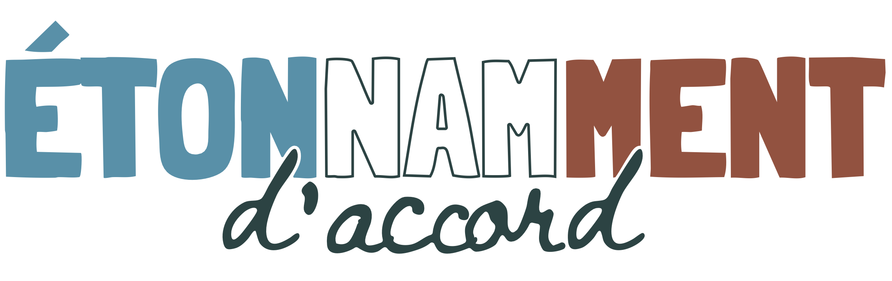

…Bienvenue
La soirée va commencer. Gardez cette page ouverte : elle se mettra à jour toute seule.
La mission d'entrée est fermée pour le moment.
C'est noté
Merci. Gardez cette page ouverte : la suite s'affichera ici.
Trouvez quelqu'un qui…
Votre consigne de rencontre s'affichera ici.
Votre îlot
Le numéro de votre îlot s'affichera ici.
Vos propositions
La saisie n'est pas encore ouverte.
Vote
Le vote n'est pas encore ouvert.
Regardez l'écran
Les résultats sont projetés dans la salle.
Avant de partir
Le questionnaire n'est pas encore ouvert.